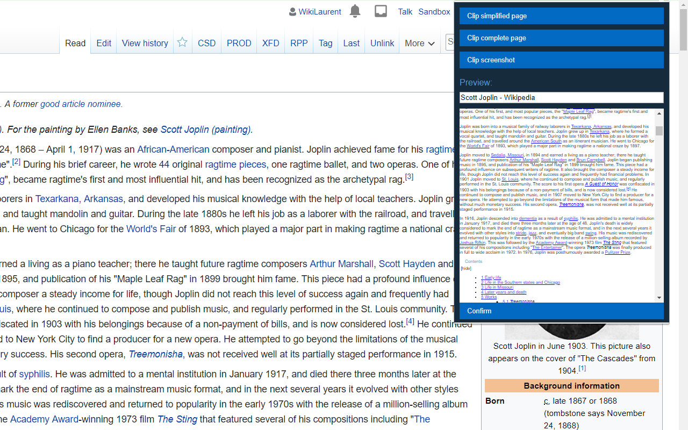
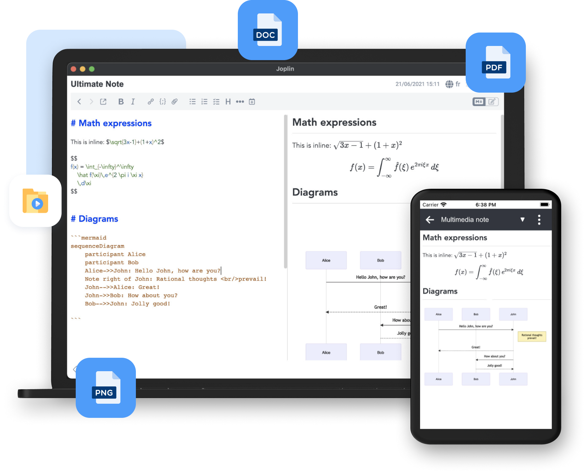

折腾了一周 Joplin 后，我把笔记全搬过来了
一个用了五年某云笔记的老用户，因为同步丢了两篇笔记而彻底弃坑，转投开源的 Joplin。这是七天重度使用后的第一手体验报告。
为什么装它
说起来挺简单——上周同步崩了，写了半年的项目笔记丢了两篇。云笔记服务在道歉和"数据已尽力恢复"之外给不出任何说法，我盯着屏幕想了五分钟，决定换个路子。
之前就听过 Joplin 的名字，它的官网写着开源、数据全在自己手里、支持 Markdown。抱着试试看的心态从官方下载点了安装包，整个过程没花超过三分钟，双击打开，一个朴素的三栏界面就摆在那里了。说实话第一眼没什么惊艳的——左边笔记本树、中间笔记列表、右边编辑区，和绝大多数笔记工具长得差不多。但界面干净，没有弹窗、没有广告、没有"升级高级版"的小红点，这点让我松了口气。
网页剪藏：终于有个能用的
最先上手的功能是网页剪藏。原因很实际——我平时收集资料全靠浏览器收藏夹，但收藏夹里的链接过半年点不开一半。Joplin 的剪藏是浏览器扩展加桌面端服务的组合，两端都要配一下，装完扩展在 Joplin 设置里开启剪藏服务就行。
真正惊艳的是剪藏质量。点一下扩展图标，整个网页的正文就被干净地抽出来了——广告、侧边栏、推荐位全被剥掉，只留标题和正文，自动变成 Markdown 格式存进你指定的笔记本。选"截图模式"还能把整页截成一张图贴进笔记。我这一周把过去半年收藏夹里的干货文章全剪了一遍，连之前忘了看的技术博客都翻出来读了，剪藏速度快到离谱，一篇文章两秒钟搞定。

唯一的小别扭：剪藏服务默认跑在本机某个端口上，装了安全软件的第一次可能会弹拦截提示，放行就好。还有手机浏览器暂时不支持剪藏，这个倒是可以理解——手机端要搞服务端推送成本太高了。
附件管理：比想象中好用太多
之前用云笔记时，附件上传就是个玄学——大文件传不上去、PDF 不能预览、音视频存进去只能下载。Joplin 这一块的体验把我打醒了。
任何文件都能直接拖进笔记里，截图 Ctrl+V 就粘进去了，连保存都不用。真正让我惊喜的是内嵌预览：PDF 直接在笔记里翻页看，mp3 和 mp4 直接在笔记里播放，不用跳出来。我上周整理了一批学习资料，把之前存的 PDF 讲义全拖进笔记，一边翻讲义一边写自己的理解，体验丝滑到让我回想起读书时用平板做笔记的感觉。

移动端省流量这点也值得提一句。附件下载策略有三个选项：始终下载、手动下载、打开时才下载。默认是始终下载，但手机上我改成了"打开时才下载"——毕竟我存了好几个 G 的 PDF 和视频，每次同步全下载太费流量了。
当然也有坑要注意：移动端目前单个附件不能超过 10MB，大附件得在桌面端处理。还有个安全提醒我差点忽略——从不可信来源收到的笔记，别随手打开陌生类型的附件，Windows 上 .exe、.bat 这些类型会被当程序运行。自己创建的笔记默认可信，这点没问题，但如果以后和朋友共享笔记，这条得记在脑子里。
待办提醒：够用就好
我试过不少任务管理工具，从 Todoist 到 Things，最后都不了了之。Joplin 的待办功能反而让我用起来了。原因很简单——它不是个独立的任务管理器，就是笔记的一个变种类型。
待办和普通笔记长得一模一样，支持 Markdown 正文、支持附件、支持笔记本分类。区别只在于多了个勾选框和闹钟设置。这点戳中了我——我之前用任务管理工具的痛点就是，任务的背景资料（比如一篇参考文章、一段代码片段）得单独存，和任务本身割裂开来。在 Joplin 里，我把任务的所有上下文直接写在待办正文里，闹钟到点弹通知，完成了点一下勾选框打个勾。就这么简单。
还有几个搜索过滤器让管理变得顺手——type:todo 列出所有待办，iscompleted:0 只看未完成，-due:day+7 显示未来七天到期的。把这些组合起来，个人任务面板就有了。当然如果你需要甘特图、团队协作那种重型功能，Joplin 肯定不是答案。但就个人日常任务管理来说，够用了。
数据自管：这才是真·放心
最让我安心的还是数据自管这件事。Joplin 支持把笔记整库导出成 JEX 格式，一个归档文件包含所有笔记、笔记本结构、标签、创建时间这些元数据，随时能再导入回来。格式细节我后来去joplin文档翻了一下才完全搞明白，同步和备份是两回事——同步会双向修改，误删会同步到云端，但 JEX 备份是独立快照，放移动硬盘上、放另一块盘上都可以。我现在养成了习惯，每次批量导入或者大改动前后都导一次 JEX，花不了十秒钟。
适合谁，不适合谁
写了这么多，总结一下。
适合：重度 Markdown 用户、在意数据主权不想被云平台绑架的人、知识管理起步阶段不想花大钱买高级笔记工具的人。如果你平时就写 Markdown、习惯用文件夹和标签组织知识、偶尔需要剪藏网页和嵌附件，Joplin 几乎是免费的最优解。
不适合：需要团队协作、习惯所见即所得富文本编辑、依赖云笔记生态绑定的人（比如之前在某云笔记里建了大量知识库、导出迁移成本太高）。Joplin 是个人工具，团队层面的东西它没有也不打算有。
我现在已经把过去五年存的全部笔记迁移过来了——Markdown 目录直接导入，图片附件自动跟上，花了一个下午搞定。说真的，之前花在云笔记会员费和焦虑数据丢失的那些钱和时间，换个开源工具，换得回来了。资料归档这块也顺手处理了：GitHub 上有完整的整理，国内访问不方便的话 Gitee 和 GitCode 也各存了一份。